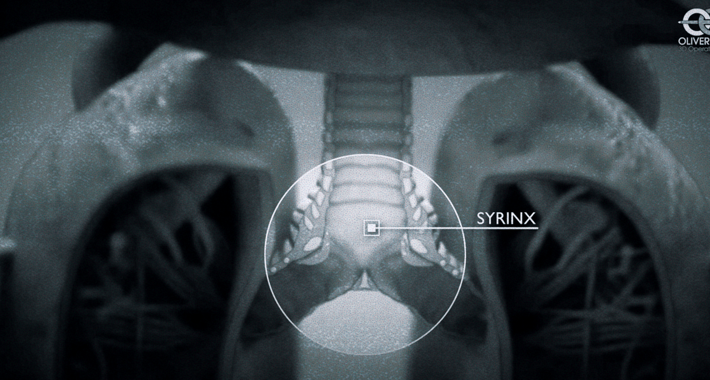

The science behind making machines talk just like humans is very complex, because our speech patterns are so nuanced.
3D sound system
Chirp, whistle, trill, caw, rattle, drum
Birds make many different sounds. They chirp, whistle, trill, caw, rattle, drum, and much, much more. Vocally, they are in a class of their own.
But how do birds make these sounds?
The voice is not easy to grasp
"The voice is not easy to grasp," says Klaus Scherer, emeritus professor of the psychology of emotion at the University of Geneva. "To analyze the voice really requires quite a lot of knowledge about acoustics, vocal mechanisms and physiological aspects. So it is necessarily interdisciplinary, and quite demanding in terms of what you need to master in order to do anything of consequence."
So it's not surprisingly taken well over 200 years for synthetic voices to get from the first speaking machine, invented by Wolfgang von Kempelen around 1800 – a boxlike contraption that used bellows, pipes and a rubber mouth and nose to simulate a few recognizably human utterances, like mama and papa – to a Samuel L. Jackson voice clone delivering the weather report on Alexa today.
Speaking Machine
A model replica of Wolfgang von Kempelen's Speaking Machine.
Fabian Brackhane
Talking machines like Siri, Google Assistant and Alexa, or a bank's automated customer service line, are now sounding quite human. Thanks to advances in artificial intelligence, or AI, we've reached a point where it's sometimes difficult to distinguish synthetic voices from real ones.
Birds have the most complicated respiratory system amongst vertebrates. It is a more efficient system than in mammals. They have thin-walled air sacs that are connected to the lungs. These air sacs are not directly involved in gas exchange but act as a bellows that direct the flow of air through the lungs in one direction, from back to front. The genius of the air sacs is that they allow a continuous unidirectional flow of air during both inhalation and exhalation. Because of this specially equipped respiratory system, birds are able to sing at surprisingly high volumes, sometimes for minutes without interruption.
In birds, on the other hand, the sound-producing organ with which they produce their diverse songs and calls is the syrinx, or vocal head, located much lower in the thoracic cavity than the larynx, namely at the junction of the main bronchi and thus at the entrance to the lungs. The vocal head is equipped with four elastic membranes. These can be stretched like vocal cords by a singing muscle apparatus. In songbirds, as many as seven to nine tiny pairs of muscles ensure that the membranes are tightened to varying degrees. In other bird groups, there are sometimes only two pairs

Single tones are often modulated in extraordinarily rapid succession. Up to 200 pitch changes per second are known. These rapid pitch changes can be explained by the physiology of the syrinx muscles. It's also interesting that the syrinx halves can work independently of each other, making two-voiced vocalizations possible. Some birds can sing while inhaling and exhaling, but most sing as we humans do, while exhaling.
22.8 | 23 | 23.2 | 23.4 |
Ai imitates sound
Male lyrebirds are especially famous for their complex courtship displays, which involve a wide range of calls and song imitations. Recent research has shown that male lyrebirds can imitate the calls of over 20 different bird species, as well as sounds made by humans and other animals. They have been known to imitate the sounds of kookaburras, koalas, and even the calls of other lyrebirds. The ability to mimic so many different sounds is a testament to the remarkable memory and processing skills of these birds.
But it’s not just about quantity when it comes to lyrebird mimicry. The quality of their imitations is truly impressive. In a study published in the journal “Nature Communications” in 2020, researchers found that lyrebirds are capable of rapidly and accurately imitating new sounds, and even adapting their mimicry to match the frequency and rhythm of the sounds they are imitating. For example, they have been known to imitate the sound of a car engine revving up, and even the sound of a cell phone ringtone.
So, why do lyrebirds have such a strong ability to imitate sounds? A study published in the “Journal of Experimental Biology” in 2018 investigated the role of mimicry in lyrebird courtship displays. The researchers found that males use their mimicry skills to attract females and demonstrate their fitness. Female lyrebirds are attracted to males who can imitate a wider range of sounds, so this skill has become a crucial component of their courtship behaviour. It’s like a musical talent show, where the male lyrebird with the best imitations wins the heart of the female.
But the evolution of lyrebird mimicry is just as interesting as the behaviour itself. A study published in the “Proceedings of the Royal Society B” in 2017 investigated the evolution of lyrebird mimicry and found that these birds have been evolving their mimicry abilities for millions of years. This skill has become a key component of lyrebird behaviour, allowing them to communicate and attract mates, but also to ward off predators and establish their territory. It’s like lyrebirds have their own personal jukebox, and they’re always adding new songs to their playlist.
In conclusion, lyrebirds are truly remarkable birds, with an incredible ability to mimic sounds from their environment. From other birds to humans and even man-made sounds, lyrebirds can imitate them all. These birds have been evolving their mimicry skills for millions of years, and it plays an important role in their courtship displays and overall survival. So next time you hear a lyrebird singing, listen carefully – you might just hear your favourite songs and animal calls in their beautiful chorus.